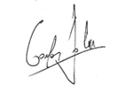

Crystalix
Восстановит зрение за 1 курс
Быстро снимет покраснения и боль
Оздоровит сетчатку
Акция закончится через:
Ученые доказали:
после 40 лет происходит
резкое снижение зрения у 93% людей!
Дальнозоркость может привести к слепоте!

1 стадия
Раздражение, ощущение песка в глазах, усталость и покраснения - только начало проблем со зрением
2 стадия
Катаракта, глаукома, гнойное воспаление - последствия запущенного нарушения зрения
3 стадия
Полная потеря зрения - то, что может произойти, если вовремя не принять меры!
Плохое зрение - это проблема, от которой страдают около 75% нашего населения. Нельзя преуменьшать риски, которым вы подвергаетесь из-за плохого зрения. Вы находитесь в группе риска серьезных заболеваний: глаукома, катаракта и т.д.
Натуральный состав комплекса Crystalix неоднократно доказал свою эффективность в профилактике и лечении плохого зрения. Принимайте капсулы 2 раза в день в течение 2 недель, и ваше зрение восстановится.

Crystalix
Лучшее средство для восстановления зрения в Латинской америке
Восстанавливает сосуды и ткани глаза

Нормализует давление глазного дна
Укрепляет мышцы глазного яблока
Снимает воспаление и усталось
В чем секрет комплекса Crystalix?
Crystalix - это уникальная запатентованная формула с использованием 6 активных компонентов.
Экстракт листьев гинкго билоба
- Природный антиоксидант
- Укрепляет стенки сосудов глаз
- Снимает воспаление
Комплекс витаминов
- Оказывает комплексное благотворное воздействие
Daucus carota
- Питает и укрепляет стенки сосудов
- Профилактика развития катаракты
Spinacia oleracea
- Защищает от ультрафиолета
- Регенерирует ткани глаз
Chamaemelum nobile
- Снижает глазное давление
- Нормализует кровообращение
- Снижает реакцию глаз на внешние раздражители
Экстракт фенхеля
- Улучшает зрение
- Обновляет сетчатку глаз
- Устраняет сухость
Представьте, как изменится ваша жизнь, когда у вас снова будет зрение «единица»
Опрос удовлетворенности клиентов, март 2021г., 2740 человек:
Международная ассоциация офтальмологии в течение 9 месяцев проводила клинические испытания средства Crystalix с участием 15260 человек.
Восстановление зрения
99%
Очищение хрусталика
96%
Устранение усталости и воспаления
98%
Наличие побочных эффектов
84%
Закажите Crystalixсегодня по специальной цене!

Тысячи людей уже вернули зрение с Crystalix!
У меня после аварии и удара головой еще 15 лет назад развился астигматизм и упало зрение. Видел только то, что под носом, носил очки с огромными линзами. Надо ли говорить, что женщины очкариков не очень жалуют. Слепой крот, что уж. Да к тому же, после дня работы в очках вечером трещала голова. Мучили мигрени, приходилось постоянно сидеть на анальгине. На форуме прочитал отзыв о Crystalix, как он помог парню избежать операции на глазах! Заказал себе. Через неделю заметил, что спокойно работаю за компьютером весь день. Да и головные боли исчезли. Через 10 дней я понял, что очки слишком сильные, зашел в оптику проверить зрение и был поражен. С -7 зрения восстановилось до -3. Это лучше, чем лазерная коррекция. Продолжаю пить Crystalix. Уж больно хороший результат!

Julio Ojeda
39 лет
У меня уже 6 лет проблемы со зрением. Кристаликс спас меня, когда зрение стало стремительно падать, а в операции мне отказали. Через 2 недели приема, моё зрение улучшилось на 2 единицы. Заказала еще для своей мамы, у нее тоже давно проблемы со зрением.
Lourdes Juárez
47 лет
У меня давно были проблемы со зрением. В сумерках видела с трудом, в дороге фонари сливались в одну линию. В сумке постоянно носила 3 пары очков: для чтения, затемняющие от солнца днем и для ночного вождения. Забыть хотя бы одни — равносильно катастрофе! Честно говоря, готовилась к операции по замене хрусталика, но боялась ее до смерти. Все-таки разрез на глазу. Хорошо, что вовремя узнала про КРИСТАЛИКС! Я сразу заметила эффект от средства: стало легче фокусироваться на предметах, а через пару недель с удивлением обнаружила, что зрение в темноте стало значительно лучше. Через месяц с глаз словно спала пелена, я перестала щуриться! Я продолжаю и сейчас пить капсулы и могу сказать, что это лучшее средство из всех, что мне когда-либо назначали!
Nieves Moreno
60 лет
Способ применения
Средство необходимо принимать по 1 капсуле
Принимайте 2 раза в день за 30-40 минут до еды
Для надежного закрепления результата, принимайте курсом
Как сделать
заказ?
Оставьте заявку на нашем сайте, заполнив форму заказа
Наш менеджер перезвонит вам для уточнения деталей и мы отправим ваш товар
Оплатите вашу посылку при получении на почте или у курьера